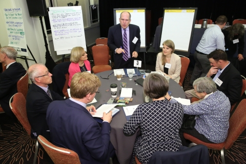
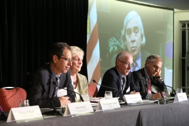
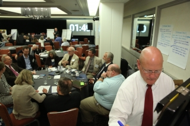
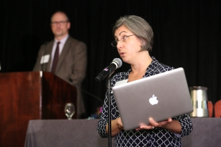

Consent-Based Siting Public Meeting in Boston
Meeting Summary
On June 2, 2016, the Department of Energy’s consent-based siting initiative hosted its fifth public meeting in Boston, Massachusetts at the Hyatt Regency Downtown. The purpose of this meeting was to hear from the public and stakeholders on important elements in the design of a consent-based siting process. A consent-based siting process will support the development of facilities needed to manage spent nuclear fuel and high-level radioactive waste, including consolidated interim storage facilities and permanent geologic repositories.
The agenda included a presentation from the Department of Energy’s Acting Assistant Secretary for Nuclear Energy, John Kotek. Mr. Kotek discussed the nuclear energy activities that have brought us to this point, as well as described the Department’s vision for an integrated waste management system and the need for a consent-based approach to siting. This presentation was followed by a panel session with several experts providing diverse perspectives on the primary issues that need to be resolved in the design and implementation of a consent-based process. Participants then had the opportunity to comment or ask questions to the Department and the panelists.
Following this session, participants engaged in facilitated small group discussions on a variety of topics related to consent-based siting and integrated waste management. These small group discussions provided the opportunity for frank and open conversations on key topics that will inform the design of a consent-based process.
The agenda also included a public comment period and two open houses with poster sessions before and after the formal meeting. The open house sessions provided participants with the opportunity to engage in less formal discussions with the Department and other meeting attendees and to respond to any outstanding questions.
Approximately 60 members of the public attended the meeting in person and 20 participants viewed the meeting via webinar.
Keynote and Panel
The meeting began with opening statements by Marge Kilkelly, Senior Policy Advisor to Senator Angus King, Jr. Ms. Kilkelly based her remarks on her 15 years of experience as Chair of the Maine Yankee Community Advisory Panel (CAP) where she promoted open communication, public involvement, and education on nuclear power plant decommissioning and the storage of spent nuclear fuel. Ms. Kilkelly discussed the value of stakeholder engagement and dialogue especially as they pertain to technologically complex and publically visible projects. During her remarks, Ms. Kilkelly highlighted the particular role that the CAP played in helping to resolve issues and concerns, being viewed as an honest broker of information, and serving to build trust between the parties. Ms. Kilkelly then went on to relate these lessons from the CAP to how they may be incorporated into the Department’s consent-based siting program. To that end, Ms. Kilkelly stressed the importance of transparency, responsiveness, and inclusiveness. She noted that these themes require investment and commitment from the Department as it moves ahead. Finally, Ms. Kilkelly suggested that fixing the problem of nuclear waste management is one that transcends how individuals may feel about nuclear power and urged the Department and its stakeholders to work together on an effective solution to a shared problem.
Ms. Kilkelly’s comments were followed by a presentation from John Kotek, Acting Assistant Secretary for Nuclear Energy. Mr. Kotek’s presentation began with a brief video recording from Secretary of Energy Moniz who emphasized the importance of finding a lasting nuclear waste management solution and how such an effort must be grounded in a consent-based siting process. Mr. Kotek then described the Administration’s integrated waste management strategy as well as reviewed the Department’s approach to developing a consent-based siting process. A copy of Mr. Kotek’s presentation can be found at the bottom of this page.
Following Mr. Kotek’s remarks, the panelists provided their perspectives on consent-based siting and the issues the Department should consider as it moves forward. Panel members included:
- Dr. Jonathan Raab, Raab Associates, Ltd.
- Mary Lampert, PilgrimWatch
- Philip Richardson, Galson Sciences Ltd.
- David O’Connor, ML Strategies
Dr. Raab structured his remarks based on his 25 years of experience mediating complex energy and infrastructure projects. To that end, Dr. Raab first suggested that the baseline technical standards for a storage and/or disposal facility be developed in an open and transparent manner and be subject to stakeholder review and input. Dr. Raab also suggested that once these standards have been developed and accepted, then the Department should undertake a preliminary geographic filtering exercise to arrive at a list of regions in the United States that pass threshold technical siting criteria. With these regions identified, a Request for Proposals would be issued to determine if there are communities who may wish to learn more about the Department’s program and consider volunteering as a host community. Dr. Raab also suggested as part of the standards setting process that financial incentives also be developed so that any potentially interested parties be made aware of the basic terms of a proposed siting relationship. Finally, with respect to standards development as well as the establishment of siting criteria and baseline financial compensation terms, Dr. Raab stressed the importance of transparency underlying the process and how the use of a third-party neutral facilitator can play a critical role in creating an environment that promotes information exchange and constructive dialogue.
Following Dr. Raab’s remarks, Ms. Lampert offered her insights and perspectives. Based on her involvement with PilgrimWatch, Ms. Lampert focused on the presence of spent fuel near the Pilgrim Nuclear Power Station. To that end, she discussed her concerns over the relative crowding of the spent fuel pools and the need to relocate the fuel to more stable and secure storage (dry casks). Ms. Lampert mentioned that the presence of spent nuclear fuel (in pools or dry casks) on a coast subject to storm surges was viewed as an unacceptable risk to local community members who have never given consent to act as hosts to spent nuclear fuel storage installations. Ms. Lampert then discussed the need to move this fuel to an area more suitable for long-term storage (likely a rural and arid location). In this regard, Ms. Lampert emphasized the importance of environmental justice considerations in the siting process, as well as the need for strong state control over the operation of a proposed facility.
Mr. Richardson’s observations benefited from his 30+ years of experience working on nuclear waste disposal programs in the United Kingdom and elsewhere in Europe. Mr. Richardson’s comments focused on the issue of trust: namely, trust between citizens and their government. In general, Mr. Richardson felt the relative progress shown in European nuclear waste siting efforts was the result of a greater degree of trust between the parties (citizens and their elected officials) than he has witnessed in the United States. Mr. Richardson then went on to characterize these efforts as modestly successful and having resulted from a series of fits and starts or “one step forward and two steps back.” While site development is proceeding in Finland, a the U.K. provides an example in which a local community volunteered to host a disposal facility but this support was recently over-ruled by the surrounding county that chose to terminate the program. Going forward, Mr. Richardson urged the Department to continue with their consent-based siting program, emphasizing transparency and stakeholder engagement. He noted that while no guarantees are possible, such an approach offers the best chance for success.
The final panel member to speak was Mr. David O’Connor who provided his observations based on his experience as a mediator, as well as a state regulator responsible for large-scale energy projects. Mr. O’Connor discussed the existing trust deficit and the need for this shortfall to be overcome for any consent-based siting effort to be successful. In working to build trust, Mr. O’Connor described the nature of the proposed working relationship between a local host community and the federal government. According to Mr. O’Connor, negotiating this relationship is challenging due to the large power imbalance between the parties combined with fact that these two entities (a local community and the federal government) do not have any experience working together. As such, significant time and energy must be committed to establishing this working relationship and developing the foundation for meaningful negotiations. Mr. O’Connor also echoed Dr. Raab’s observations as to the value of a third-party facilitator in setting the framework for these ongoing discussions.
Speaker and panelist biographies are included at the bottom of the page.
Facilitated Question and Answer Session
Following the panel presentation, meeting participants asked questions to the panel members. Panel members engaged with the participants on several issues, ranging from the chronic lack of trust in the Department to the applicability of the National Environmental Policy Act to the consent-based siting effort, and the view that spent nuclear fuel should be treated as a resource and not a waste. There were also many in the audience who voiced their opinion that they will not view the current Department effort as sincere until all nuclear plants are closed down and the production of waste is halted. Additional issues that were discussed included the need to engage with communities that already host spent nuclear fuel, consideration of environmental and social justice issues, and the relative lack of diversity in the audience members.
Facilitated Small Group Discussions
After a short break, meeting participants were invited to join in facilitated small group discussions to explore the issues involved in consent-based siting. These discussions were facilitated by independent third-party professional facilitators. Participants formed five small groups, each consisting of five to eight members of the public. In addition, each group included a note taker and a Department representative. The groups met for approximately one hour and discussed a wide range of issues associated with developing a consent-based siting process. At the end of the one-hour discussion, the facilitator from each table highlighted his or her group’s discussion and reported key observations back to the larger meeting.
Key issues discussed during these small group discussions included, but are not limited to:
- Trust – The lack of trust in the federal government and the need to restore this trust as part of a consent-based process.
- Intergenerational Equity – The need to consider multiple generations in siting considerations and to implement a related education and outreach effort tailored to the information needs of youth as well as adults.
- How Consent is Determined – The varying degrees of consent, how such consent may be granted, and when and how consent may be revoked.
- Transparency – The ongoing need for the Department to conduct all its operations in a manner that strives for transparency and inclusiveness. This is an important consideration in working to restore trust.
A summary of these facilitated small group discussions is included at the bottom of this page.
Public Comment Period
Following the small group discussions, a 30-minute comment period took place to allow members of the public to make statements. These statements included but were not limited to the need to include multiple generations in this dialogue (with an emphasis on youth), the risk posed to communities by the presence of spent fuel in storage pools, the need to stop the operation of all nuclear power plants, and the lessons learned from current host communities in managing their current role as a non-consenting host. Additional statements focused on operating nuclear power plants and how the owners of these plants work to earn the consent of their host communities, the role of nuclear power in a carbon-constrained society, and the need to reinforce existing storage installations as a preventive measure against potential terrorism.
Closing Remarks
Following the public comment period, Mr. Andrew Griffith, Associate Deputy Assistant Secretary for Fuel Cycle Technologies, offered closing remarks in which he thanked the audience for their active and thoughtful participation, acknowledged the differing views about how best to move ahead, recognized the existing deficit of trust that the public has in the Department, and reinforced DOE’s commitment to stakeholder engagement as it moves forward with the consent-based siting process.